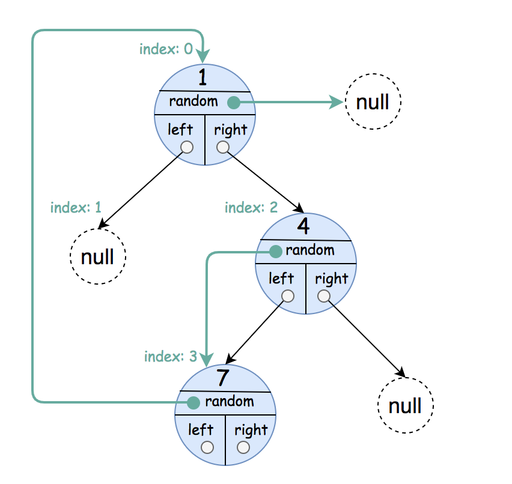
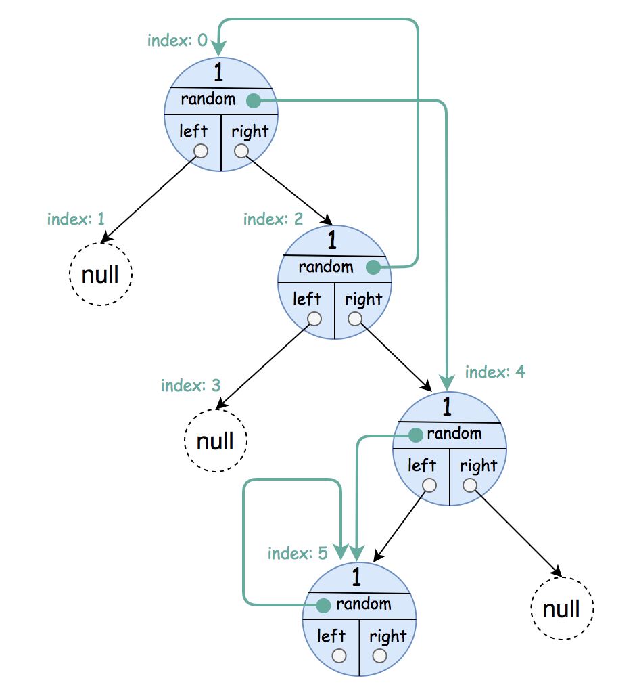
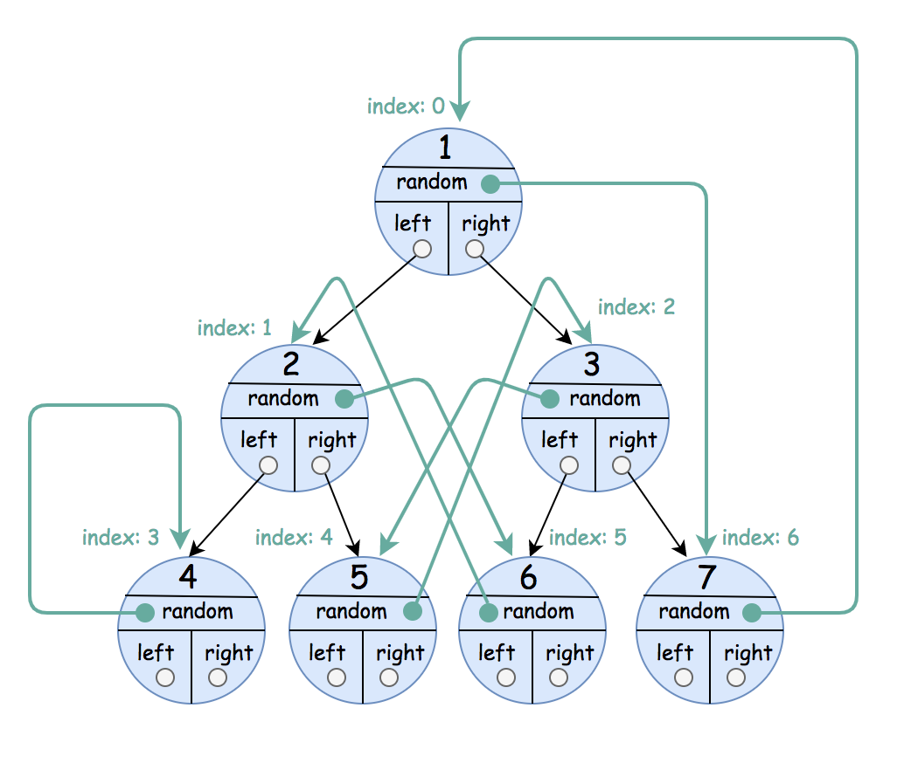

| Category | Difficulty | Likes | Dislikes |
|---|---|---|---|
| Algorithms | Medium | 432 | 93 |
hash-table | tree | depth-first-search | breadth-first-search | binary-tree
amazon
A binary tree is given such that each node contains an additional random pointer which could point to any node in the tree or null.
Return a deep copy of the tree.
The tree is represented in the same input/output way as normal binary trees where each node is represented as a pair of [val, random_index] where:
val: an integer representing Node.valrandom_index: the index of the node (in the input) where the random pointer points to, or null if it does not point to any node.You will be given the tree in class Node and you should return the cloned tree in class NodeCopy. NodeCopy class is just a clone of Node class with the same attributes and constructors.
Example 1:

Input: root = [[1,null],null,[4,3],[7,0]]
Output: [[1,null],null,[4,3],[7,0]]
Explanation: The original binary tree is [1,null,4,7].
The random pointer of node one is null, so it is represented as [1, null].
The random pointer of node 4 is node 7, so it is represented as [4, 3] where 3 is the index of node 7 in the array representing the tree.
The random pointer of node 7 is node 1, so it is represented as [7, 0] where 0 is the index of node 1 in the array representing the tree.Example 2:

Input: root = [[1,4],null,[1,0],null,[1,5],[1,5]]
Output: [[1,4],null,[1,0],null,[1,5],[1,5]]
Explanation: The random pointer of a node can be the node itself.Example 3:

Input: root = [[1,6],[2,5],[3,4],[4,3],[5,2],[6,1],[7,0]]
Output: [[1,6],[2,5],[3,4],[4,3],[5,2],[6,1],[7,0]]
Constraints:
tree is in the range [0, 1000].1 <= Node.val <= 106